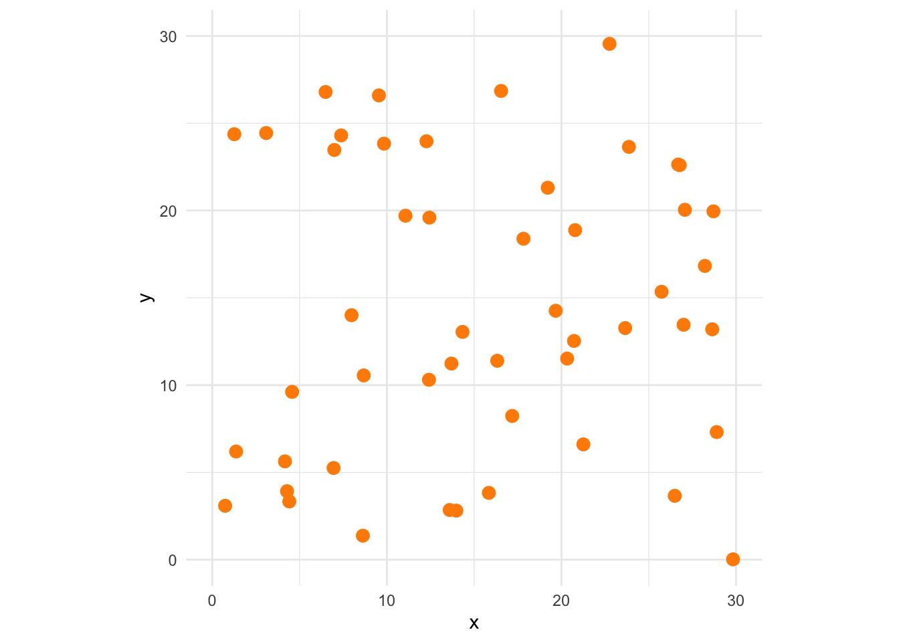
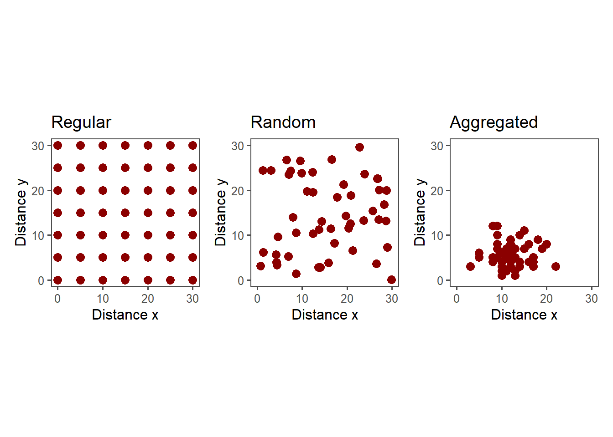
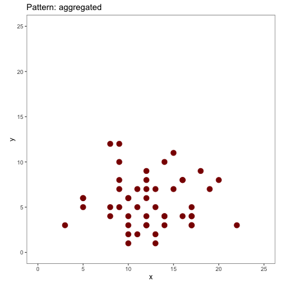
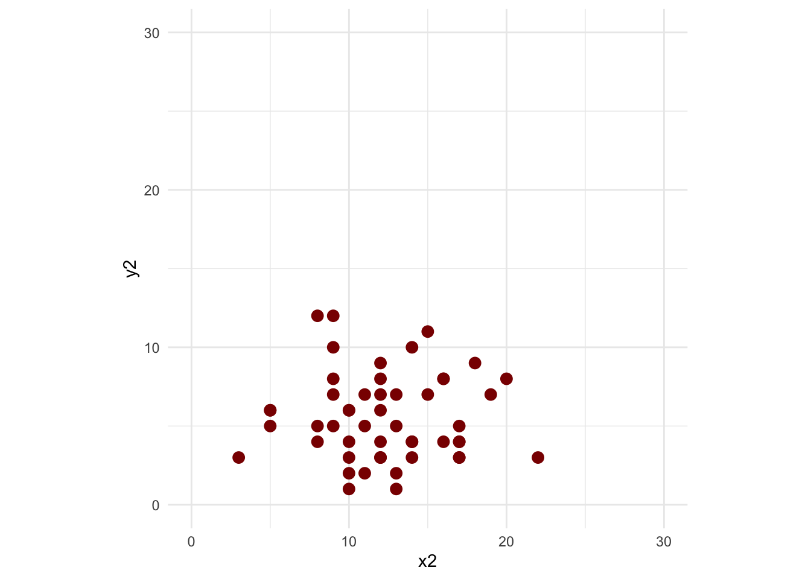

set.seed(123) # for reproducibility
x <- runif(50, 0, 30) # x vector
y <- runif(50, 0, 30) # y vector
dat <- data.frame(x,y) # dataframe for plotting11 Spatial patterns
This is a work in progress that is currently undergoing heavy technical editing and copy-editing
11.1 Definitions
A spatial disease pattern can be defined as the arrangement of diseased entities relative to each other and to the architecture of the host crop (Madden et al. 2017). Such arrangement is the realization of the underlying dispersal of the pathogen, from one or several sources within and/or outside the area of interest, under the influence of physical, biological and environmental factors.
The study of spatial patterns is conducted at a specific time or multiple times during the epidemic. When assessed multiple times, both spatial and temporal processes can be characterized. Because epidemics change over time, it is expected that spatial patterns are not constant but change over time as well. Usually, plant pathologists are interested in determining spatial patterns at one or various spatial scales, depending on the objective of the study. The scale of interest may be a leaf or root, plant, field, municipality, state, country or even intercontinental area. The diseased units observed may vary from lesions on a single leaf to diseased fields in a large production region.
The patterns can be classified into two main types that occur naturally: random or aggregated. The random pattern originates because the chances for the units (leaf, plant, crop) to be infected are equal and low, and are largely independent from each other. In aggregated spatial patterns, such chances are unequal and there is dependency among the units. For example, a healthy unit close to a diseased unit is at higher risk than more distant units.
Let’s simulate in R two vectors (x,y) for the positions of diseased unitss that follow a random or an aggregated pattern. For the random pattern, we use runif, a function which generates random deviates from the uniform distribution.
Now, the plot to visualize the random pattern.
library(tidyverse)
library(ggthemes)
theme_set(theme_few())
pr <- dat |> # R base pipe operator
ggplot(aes(x, y))+
geom_point(size =3,
color = "darkred")+
ylim(0,30)+
xlim(0,30)+
coord_fixed()+
theme_few()+
labs(x = "Distance x", y = "Distance y",
title = "Random")
pr
Now, we can generate new x and y vectors using rnbinom function which allows generating values for the negative binomial distribution (which should give rise to aggregated patterns) with parameters size and prob. Let’s simulate 50 values with mean 12 and size 20 as dispersal parameter.
x <- rnbinom(n = 50, mu = 12, size = 20)
y <- rnbinom(n = 50, mu = 5, size = 20)
dat2 <- data.frame(x, y)This should give us an aggregated pattern.
pag <- dat2 |>
ggplot(aes(x, y))+
geom_point(size = 3, color = "darkred")+
ylim(0,30)+
xlim(0,30)+
coord_fixed()+
theme_few()+
labs(x = "Distance x", y = "Distance y",
title = "Aggregated")
pag
A rare pattern found in nature is the regular pattern, but it may be generated artificially by the man when conducting experimentation. Follows a code to produce the regular pattern.
x <- rep(c(0,5,10,15,20, 25, 30, 35, 40, 45), 5)
y <- rep(c(0, 5, 10, 15, 20, 25, 30, 35, 40, 45), each = 10)
dat3 <- data.frame(x, y)
preg <- dat3 |>
ggplot(aes(x, y))+
geom_point(size = 3, color = "darkred")+
ylim(0,30)+
xlim(0,30)+
coord_fixed()+
theme_few()+
labs(x = "Distance x", y = "Distance y",
title = "Regular")
pregWarning: Removed 51 rows containing missing values (geom_point).
library(patchwork)
preg + pr + pag
ggsave("imgs/spatial.png", width = 10, height = 4)We can create an animation showing the three patterns using gganimate package
rand <- dat |>
mutate(i = "random")
agg <- dat2 |>
mutate(i = "aggregated")
reg <- dat3 |>
mutate(i = "regular")
patterns <- rbind(agg, rand, reg)
library(gganimate)
patterns |>
ggplot(aes(x, y, color = factor(i)))+
geom_point(size = 4)+
theme_light()+
coord_fixed()+
ylim(0,25)+
xlim(0,25)+
transition_states(i)+
theme(legend.position = "none")+
ggtitle('Pattern: {closest_state}')
anim_save("imgs/patterns.gif")
11.2 Spatiotemporal
The location of diseased plants can be assessed over time and so we can appraise both the progress and pattern of the epidemics. Let’s visualize spatial data collected from actual epidemics monitored (plant is diseased or not diseased) during six times during the epidemics. The data is available in the epiphy R package. Let’s use only one variety and one irrigation type.
library(epiphy)
tswv_1928 <- tomato_tswv$field_1928
tswv_1928 |>
filter(variety == "Burwood-Prize"&
irrigation == "trenches") |>
ggplot(aes(x, y, color = factor(i)))+
geom_point(aes(group = seq_along(factor(t))), size =2)+
coord_fixed()+
scale_color_manual(values = c("MediumSeaGreen", "darkred"))+
labs(fill = "Status", title = "")+
theme_void()+
facet_wrap(~ t, nrow =1)
We can use the gganimate package to visualize the spatiotemporal dynamics of the epidemics.
library(gganimate)
tswv_1928 |>
filter(variety == "Burwood-Prize"&
irrigation == "trenches") |>
ggplot(aes(y, x, color = factor(i)))+
geom_point(aes(group = seq_along(factor(t))), size =5)+
scale_color_manual(values = c("MediumSeaGreen", "darkred"))+
labs(fill = "Status", title = "")+
theme_void()+
coord_fixed()+
transition_states(t,
transition_length = 1,
state_length = 1)+
ggtitle('Assessment time: {closest_state}')
anim_save("imgs/spatiotemporal.gif")